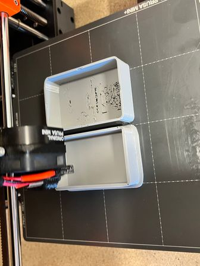
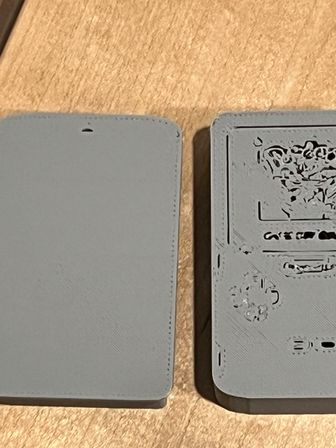
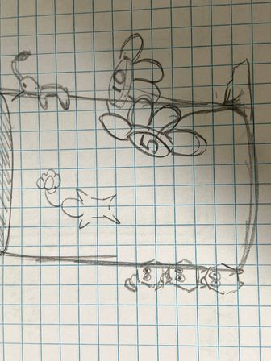

My Project 2 Reflection
Part 1: Tinkercad Remix

This first part involved finding a 3D model on Thingiverse and remixing it in Tinkercad. I chose to remix a Gameboy lightbox model that I found into an actual box rather than just a translucent plate. A lot of what I had to do was working with what I had in the design and the limitations of Tinkercad to pretty much extend the edges of the panel to make it a box with curved corners-which is where I spent a while as seen down below.
Making the rounded corners...

I struggled to find the most efficient and clean way to carve out the walls of the box to make them rounded and fit to the design such that it would fit together and not just keep the corners squared. I learned that Tinkercad has a lot of limitations in terms of what you can do with the shapes and how you can manipulate them.
Gameboy Design in Tinkercad
This was the final design of the Gameboy lightbox that I made in Tinkercad. I was able to make the box and the lid fit together and have the design of the Gameboy on the front. I learned that Tinkercad is a good starting point for beginners to learn how to design 3D models, but it has its limitations in terms of what you can do with the shapes and how you can manipulate them. The gameboy pattern on the top of the box also looked good in the design, but the flaw would show later on in the print.
Gameboy design in Prusa Slicer
I put the stl into Prusa Slicer and set the settings to 0.2mm quality, 20% infill, and 0.2mm nozzle. I didn't need any supports since the way I formatted the print layout meant that it would form naturally from the bottom up.
Tinkercaad Remix Final Print
 Overall, I would say that the print was mostly successful, but there were some issues that I would consider failures, such as the gameboy design on the front being extremely thin and the details not showing up properly. I initially thought that the design would be raised off the top but it was actually just a flat "silhouette" without any backing to it, which I couldn't tell from the initial design download and the way it was formatted in Tinkercad. It was also a bit too small for the box, so I would have to resize it in the future. I think this would also solve the issue of the design not showing up properly. At certain points, the filament was also quite spotty and thinner than it should have been.
Part 2: Fusion Remix
For the second part of the project, we were tasked with remixing a 3D model in Fusion 360. I chose to remix a pencil holder that I found on Thingiverse. I wanted to make the Pikmin look more like the actual Pikmin act from the game, so I added a nose, eyes, and a mouth to the design. I also wanted to make the Pikmin look like it was part of the tree stump.